Spark ShuffleWriter 原理
Spark的shuffle过程比较复杂，涉及到map端和reduce端的共同配合，这篇文章主要介绍map端的运行原理。map端的操作主要由ShuffleWriter实现，它对于不同的情形，会选用不同的算法。
shuffle 算法选择
spark 根据不同的情形，提供三种shuffle writer选择。
- BypassMergeSortShuffleWriter ： 当前shuffle没有聚合， 并且分区数小于spark.shuffle.sort.bypassMergeThreshold（默认200）
- UnsafeShuffleWriter ： 当前rdd的数据支持序列化（即UnsafeRowSerializer），并且没有聚合， 并且分区数小于 2^24。
- SortShuffleWriter ： 其余
下图是相关的uml图
ShuffleHandle类 会保存shuffle writer算法需要的信息。根据ShuffleHandle的类型，来选择ShuffleWriter的类型。
ShuffleWriter负责在map端生成中间数据，ShuffleReader负责在reduce端读取和整合中间数据。
ShuffleManager 提供了registerShuffle方法，根据shuffle的dependency情况，选择出哪种ShuffleHandler。它对于不同的ShuffleHandler，有着不同的条件
- BypassMergeSortShuffleHandle : 该shuffle不需要聚合，并且reduce端的分区数目小于配置项spark.shuffle.sort.bypassMergeThreshold，默认为200
- SerializedShuffleHandle : 该shuffle支持数据不需要聚合，并且必须支持序列化时seek位置，还需要reduce端的分区数目小于16777216（1 << 24 + 1）
- BaseShuffleHandle : 其余情况
getWriter方法会根据registerShuffle方法返回的ShuffleHandler，选择出哪种 shuffle writer，原理比较简单：
如果是BypassMergeSortShuffleHandle， 则选择BypassMergeSortShuffleWriter
如果是SerializedShuffleHandle， 则选择UnsafeShuffleWriter
如果是BaseShuffleHandle， 则选择SortShuffleWriter
ShuffleWriter只有两个方法，write和stop方法。使用者首先调用write方法，添加数据，完成排序，最后调用stop方法，返回MapStatus结果。下面依次介绍ShuffleWriter的三个子类。
DiskBlockObjectWriter 原理
在介绍shuffle writer 之前，需要先介绍下DiskBlockObjectWriter原理，因为后面的shuffle writer 都会使用它将数据写入文件。
它提供了文件写入功能，在此之上还加入了统计，压缩和序列化。 它使用了装饰流，依次涉及FileOutputStream ， TimeTrackingOutputStream， ManualCloseBufferedOutputStream， 压缩流， 序列化流。
TimeTrackingOutputStream增加对写花费时间的统计。
ManualCloseBufferedOutputStream 继承 OutputStream， 更改了close方法。使用者必须调用manualClose方法手动关闭。这样做是防止外层的装饰流调用close，导致里面的流也会调用close。代码如下:
1 | trait ManualCloseOutputStream extends OutputStream { |
这里使用ManualCloseBufferedOutputStream，是因为外层的压缩流和序列化流会经常关闭和新建，所以需要保护底层的FileOutputStream 不受影响。
压缩流和序列化流都是Spark SerializerManager实例化的。
DiskBlockObjectWriter的流初始化，代码如下：
1 | private def initialize(): Unit = { |
注意到 initialize方法只会调用一次，open方法会多次调用。因为DiskBlockObjectWriter涉及到了序列化，而序列化流是有缓存的，当每次flush序列化流后，都会关闭它，并且调用open获取新的序列化流。
DiskBlockObjectWriter提供了write方法写数据，还提供了commitAndGet方法flush序列化流。commitAndGet返回FileSegment，包含了自从上一次提交开始，到此次commit的写入数据的位置信息 (起始位置，数据长度)。
1 | def write(key: Any, value: Any) { |
索引文件
索引文件的数据格式很简单，它可以看作是Long的数组，索引是对应的分区在数据文件中的起始地址
1 | ----------------------------------------------------------------------------------- |
IndexShuffleBlockResolver类负责创建索引文件，存储到ShuffleIndexBlock数据块中。它提供了writeIndexFileAndCommit方法创建索引。因为创建索引文件，有线程竞争。所以它会先建立临时索引文件，然后再去检查索引文件是否已经存在，并且与临时索引文件是否相同。如果一致，则删除临时索引文件。如果不一致，则会更新索引文件。writeIndexFileAndCommit方法的代码如下：
1 | def writeIndexFileAndCommit( |
BypassMergeSortShuffleHandle 原理
BypassMergeSortShuffleHandle算法适用于没有聚合，数据量不大的场景。它为 reduce端的每个分区，创建一个DiskBlockObjectWriter。根据Key判断分区索引，然后添加到对应的DiskBlockObjectWriter，写入到文件。 最后按照分区索引顺序，将所有的文件汇合到同一个文件。如下图所示：

接下来看看源码的实现
1 | final class BypassMergeSortShuffleWriter<K, V> extends ShuffleWriter<K, V> { |
从上面的代码可以看到，BypassMergeSortShuffleHandle所有的中间数据都是在磁盘里，并没有利用内存。而且它只保证分区索引的排序，而并不保证数据的排序。
UnsafeShuffleWriter 原理
UnsafeShuffleWriter会首先将数据序列化，保存在MemoryBlock中。然后将该数据的地址和对应的分区索引，保存在ShuffleInMemorySorter内存中，利用ShuffleInMemorySorter根据分区排序。当内存不足时，会触发spill操作，生成spill文件。最后会将所有的spill文件合并在同一个文件里。
整个过程可以想象成归并排序。ShuffleExternalSorter负责分片的读取数据到内存，然后利用ShuffleInMemorySorter进行排序。排序之后会将结果存储到磁盘文件中。这样就会有很多个已排序的文件， UnsafeShuffleWriter会将所有的文件合并。
如下图所示，表示了map端一个分区的shuffle过程：

首先介绍下数据如何存储到MemoryBlock和ShuffleInMemorySorter里。
UnsafeShuffleWriter的insertRecordIntoSorter方法，支持写入单条数据。它会首先序列化数据，再存储到ShuffleExternalSorter。
1 | public class UnsafeShuffleWriter<K, V> extends ShuffleWriter<K, V> { |
ShuffleExternalSorter会将读取数据，将数据存到内存中，并将数据地址添加到ShuffleInMemorySorter，并排序。ShuffleExternalSorter的原理会比较复杂，它会涉及到spill操作。
这里先简单的介绍下数据的写入过程
1 | final class ShuffleExternalSorter extends MemoryConsumer { |
ShuffleInMemorySorter支持数据按照分区索引排序。ShuffleInMemorySorter会将数据地址和分区索引，压缩在一个Long类型。一个Long类型有64 bit，包含了分区索引，所在的内存块的pageNum，所在内存块中的偏移位置三部分。Long类型占据64bit，格式如下：
1 | -------------------------------------------------------------------------- |
因为一个MemoryBlock的偏移量只能由27 bit表示，所以ShuffleExternalSorter指定了申请内存块的最大容量，不能超过 1<< 27，也就是不能超过27位。
ShuffleInMemorySorter使用LongArray保存数据。LongArray可以看作是一个Long类型的数组，不过它支持堆内和堆外内存。下面简单看看它的源码：
1 | final class ShuffleInMemorySorter { |
然后看看ShuffleExternalSorter的spill原理。ShuffleExternalSorter继承MemoryConsumer，当ShuffleInMemorySorter的数量过大，或者Executor节点的内存不足时，都会触发spill操作。 ShuffleExternalSorter在spill的时候会从ShuffleInMemorySorter获取排序后的数据地址，然后根据地址取出数据，存到文件里面。
1 | final class ShuffleExternalSorter extends MemoryConsumer { |
ShuffleExternalSorter会把每次spill的信息保存到SpillInfo，后面的UnsafeShuffleWriter在合并文件时会用到。SpillInfo有两个重要的属性：
1 | class SpillInfo { |
UnsafeShuffleWriter的合并spill文件，代码如下：
1 | public class UnsafeShuffleWriter<K, V> extends ShuffleWriter<K, V> { |
上面有两个方法mergeSpillsWithTransferTo和mergeSpillsWithFileStream都可以合并文件。
mergeSpillsWithTransferTo方法的原理比较简单，只是简单的按照分区遍历每个文件，调用了nio的transferTo机制，拷贝数据。
1 | private long[] mergeSpillsWithTransferTo(SpillInfo[] spills, File outputFile) throws IOException { |
mergeSpillsWithFileStream的原理和mergeSpillsWithTransferTo差不多，只不过封装了文件流，增加了加密和压缩的功能。
综上所述，UnsafeShuffleWriter会利用内存存储和排序，当内存不足时，会溢写到磁盘。而且它只保证分区索引的排序，而并不保证数据的排序。
SortShuffleWriter
SortShuffleWriter它支持聚合和排序， 原理会比较复杂。因为篇幅有限，具体原理可以参考这篇博客 Spark SortShuffleWriter 原理 。